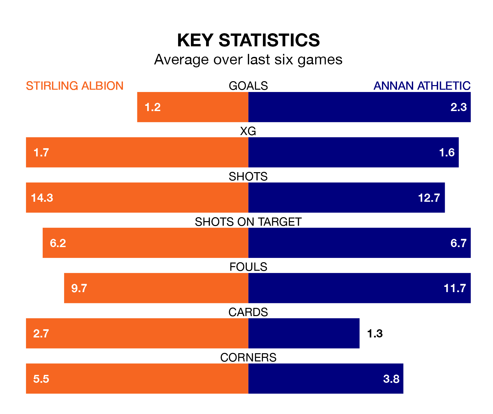

Struggling Stirling Albion face Annan Athletic at the Forthbank Stadium on Saturday looking to build on a win in their last league outing.
After securing all three points with a 3-1 victory over Edinburgh City on April 27, the Binos sit ninth in League One.
They travel to play an Annan side eighth in the standings, who were held in their last match, 3-3 against Falkirk.
In Blair Currie, Stirling can rely on one of the league's safest pair of hands. He has kept nine clean sheets in his 32 appearances this season, and no 'keeper has prevented the opposition scoring more often in League One.
In Annan's net, Greg Fleming has one clean sheet in 28 games. He has conceded a goal every 46 minutes, 20% more often than the 56 minutes between goals for Currie.
In the last 10 years, Stirling and Annan have played each other on 32 occasions. Stirling won 13 of them, Annan 10, and they drew nine times.
On average, the Binos scored 1.5 goals and the Galabankies 1.5 in those matches.
Their last meeting was on February 17, when Annan won 2-1 at home.
With 38 goals in 35 games so far this season, Albion are the league's second-lowest scorers with 1.1 goals per game. And they are conceding at an average rate, letting in 57 goals at a rate of 1.6 per game.
Athletic are also below average scorers, with 1.5 goals per game, compared to a league average of 1.6. They have conceded 1.9 goals per game.
The Binos are in mixed form in League One, with two wins and a draw from their last six games.
With three wins and two draws over that period, the Galabankies' form is better – they have taken 11 points from 18, compared to the home side's seven.
Updated: 12:00 (UTC), 02/05/24